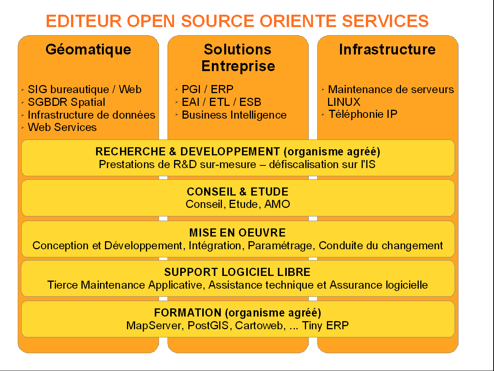

MapFish - Status Update and Good Practises
Camptocamp

A bit of history
- Initiated by Camptocamp in 2007-2008
- Goal: a framework for developing web-mapping apps
Current status
- MapFish 2.2
- Solid, used in production in lots of apps
The MapFish Project
Three components:
- The Python framework, based on Pylons
- The Ruby framework, for RoR (contribued by Pirmin Kalberer)
- The Java Print module
Highlights of the year
OSGeo incubation
Coming to an end...
Community
Written community processes
Releases
2.1
- Improved bulk insert performance
2.2
- Support for SQLAlchemy 0.7 and GeoAlchemy 0.6
Camptocamp recommendations
Buildout
Recipes we use include:
- JSTools:buildjs
- z3c.recipe.filetemplate
- collective.recipe.modwsgi
Recipes we created:
- c2c.recipe.cssmin
- c2c.recipe.jarfile
- c2c.recipe.msgfmt
All on
http://github.com/camptocamp
Apache modwsgi
MapFish apps can be executed by any WSGI server
We use Apache modwsgi
repoze.who|what
The WSGI security toolkit that has become the most pupular for Pylons.
Advantages:
- Very flexible
- Lots of plugins available (for LDAP, CAS, etc.)
What's next?
Pyramid
Pylons replaced by Pyramid
MapFish certainly needs to go there
MapFish 3? To be determined...
←
→
#